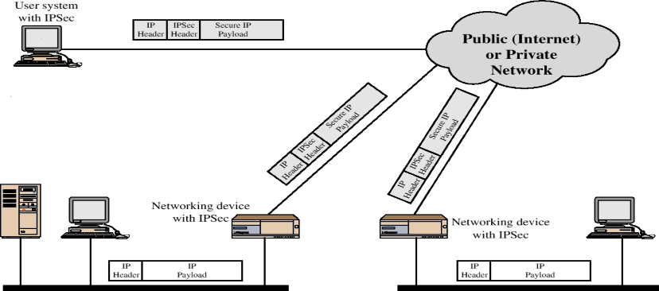
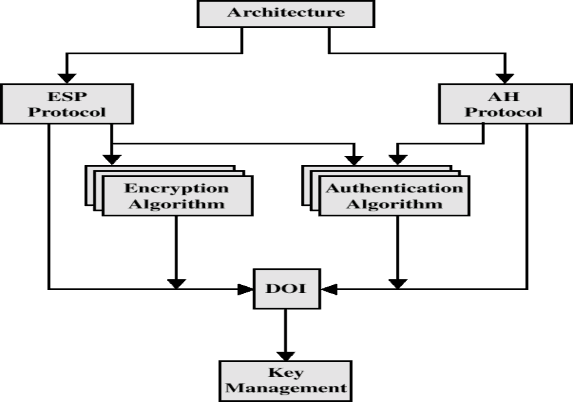
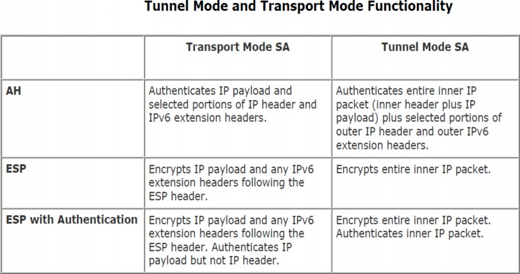

16MDS82
DATA PRIVACY AND SECURITY
(Unit IV-Part 2)
Outline
IPSecurity
IPSecurity
IPsec includes protocols for establishing mutual authentication between agents at the beginning of a session and negotiation of cryptographic keys to use during the session.
IPsec can protect data flows between a pair of hosts (host-to-host), between a pair of security gateways (network-to-network), or between a security gateway and a host (network-to-host).
It supports network-level peer authentication, data-origin authentication,
data integrity, data confidentiality (encryption), and replay protection.
3
IP security (IPSec) is a capability that can be added to either current version of
the Internet Protocol (IPv4 or IPv6), by means of additional headers.
The Internet community has developed application-specific security mechanisms in a number of application areas, including electronic mail (S/MIME, PGP), client/server (Kerberos), Web access (Secure Sockets Layer), and others.
However, users have some security concerns that cut across protocol layers.
For example, an enterprise can run a secure, private TCP/IP network by disallowing links to untrusted sites, encrypting packets that leave the premises, and authenticating packets that enter the premises.
By implementing security at the IP level, an organization can ensure secure networking not only for applications that have security mechanisms but also
for the many security-ignorant applications. 4
IP-level security encompasses three functional areas: authentication, confidentiality, and key management.
The authentication mechanism assures that a received packet was, in fact, transmitted by the party identified as the source in the packet header.
In addition, this mechanism assures that the packet has not been altered in transit.
The confidentiality facility enables communicating nodes to encrypt
messages to prevent eavesdropping by third parties.
The key management facility is concerned with the secure exchange of keys.
Secure branch office connectivity over the Internet
A company can build a secure virtual private network over the Internet or over a public WAN. This enables a business to rely heavily on the Internet and reduce its need for private networks, saving costs and network management overhead.
Secure remote access over the Internet
An end user whose system is equipped with IP security protocols can make a local call to an Internet service provider (ISP) and gain secure access to a company network. This reduces the cost of toll charges for traveling employees and telecommuters.
Establsihing extranet and intranet connectivity with partners
IPSec can be used to secure communication with other organizations, ensuring authentication and confidentiality and providing a key exchange mechanism.
Enhancing electronic commerce security
Even though some Web and electronic commerce applications have built-in security protocols, the use of IPSec enhances that security.
The principal feature of IPSec that enables it to support these varied applications is that it can encrypt and/or authenticate all traffic at the IP level.
Thus, all distributed applications, including remote logon, client/server, e-mail, file transfer, Web access, and so on, can be secured.

The above figure is a typical scenario of IPSec usage.
An organization maintains LANs at dispersed locations.
IPSec protocols are used and these protocols operate in networking devices, such as a router or firewall, that connect each LAN to the outside world.
The IPSec networking device will typically encrypt and compress all traffic going into the WAN, and decrypt and decompress traffic coming from the WAN.
When IPSec is implemented in a firewall or router, it provides strong
security that can be applied to all traffic crossing the perimeter.
IPSec in a firewall is resistant to bypass if all traffic from the outside must use IP, and the firewall is the only means of entrance from the Internet into the organization.
IPSec is below the transport layer (TCP, UDP) and so is transparent to applications. There is no need to change software on a user or server system when IPSec is implemented in the firewall or router.
IPSec can be transparent to end users. There is no need to train users on security mechanisms, issue keying material on a per-user basis, or revoke keying material when users leave the organization.
IPSec can provide security for individual users if needed.
This is useful for offsite workers and for setting up a secure virtual subnetwork within an organization for sensitive applications.
IPSec Architecture
The IPSec specification consists of numerous documents. The most important of these, issued in November of 1998, are Request for Comments: RFCs 2401, 2402, 2406, and 2408:
RFC 2401: An overview of a security architecture
RFC 2402: Description of a packet authentication extension to IPv4 and IPv6
RFC 2406: Description of a packet encryption extension to IPv4 and IPv6
RFC 2408: Specification of key management capabilities
Support for these features is mandatory for IPv6 and optional for IPv4.
In addition to these four RFCs, a number of additional drafts have been published by the IP Security Protocol Working Group set up by the Internet Engineering Task Force (IETF).
The documents are divided into seven groups, as depicted in the Figure.

encryption algorithms are used for ESP.
documents to relate to each other.
These include identifiers for approved encryption and authentication algorithms, as well as operational parameters such as key lifetime.
Access control
Integrity
Data origin authentication
Rejection of replayed packets
Confidentiality
A key concept that appears in both the authentication and confidentiality mechanisms for IP is the security association (SA).
An association is a one-way relationship between a sender and a receiver
that affords security services to the traffic carried on it.
If a peer relationship is needed, for two-way secure exchange, then two security associations are required.
Security services are afforded to an SA for the use of AH or ESP, but not
both.
A security association is uniquely identified by three parameters:
The Security Association Database defines the parameters associated with each
SA.
parameters being used with AH.
Each Security Policy Database (SPD) entry is defined by a set of IP and
upper-layer protocol field values, called selectors.
In effect, these selectors are used to filter outgoing traffic in order to map it into a particular SA. Outbound processing obeys the following general sequence for each IP packet:
Compare the values of the appropriate fields in the packet (the selector fields) against the SPD to find a matching SPD entry, which will point to zero or more Sas.
Determine the SA if any for this packet and its associated SPI.
Do the required IPSec processing (i.e., AH or ESP processing).
The following selectors determine an SPD entry:
Source and Destination Ports: These may be individual TCP or UDP port values, an enumerated list ofC:p\1-oSurdhtasC,ITo\Sercuarityw\DPiSldcard port. 19
Both AH and ESP support two modes of use: transport and tunnel mode.
Transport mode provides protection primarily for upper-layer protocols. That is, transport mode protection extends to the payload of an IP packet.
Examples include a TCP or UDP segment or an ICMP packet, all of which operate directly above IP in a host protocol stack.
Typically, transport mode is used for end-to-end communication between two hosts (e.g., a client and a server, or two workstations).
When a host runs AH or ESP over IPv4, the payload is the data that normally
follow the IP header.
ESP in transport mode encrypts and optionally authenticates the IP payload
but not the IP header.
AH in transport mode authenticates the IP payload and selected portions of the IP header.
Tunnel mode provides protection to the entire IP packet.
To achieve this, after the AH or ESP fields are added to the IP packet, the entire packet plus security fields is treated as the payload of new "outer" IP packet with a new outer IP header.
The entire original, or inner, packet travels through a "tunnel" from one point of an IP network to another; no routers along the way are able to examine the inner IP header.
Because the original packet is encapsulated, the new, larger packet may have totally different source and destination addresses, adding to the security.
Tunnel mode is used when one or both ends of an SA are a security gateway,
such as a firewall or router that implements IPSec.
Host A on a network generates an IP packet with the destination address of host B on another network.
This packet is routed from the originating host to a firewall or secure router at the
boundary of A's network.
The firewall filters all outgoing packets to determine the need for IPSec processing.
If this packet from A to B requires IPSec, the firewall performs IPSec processing and
encapsulates the packet with an outer IP header.
The source IP address of this outer IP packet is this firewall, and the destination address may be a firewall that forms the boundary to B's local network.
This packet is now routed to B's firewall, with intermediate routers examining only the outer IP header.
At B's firewall, the outer IP header is stripped off, and the inner packet is delivered to B.
ESP in tunnel mode encrypts and optionally authenticates the entire inner IP packet, including the inner IP header.
AH in tunnel mode authenticates the entire inner IP packet and selected portions of the outerIP header.
